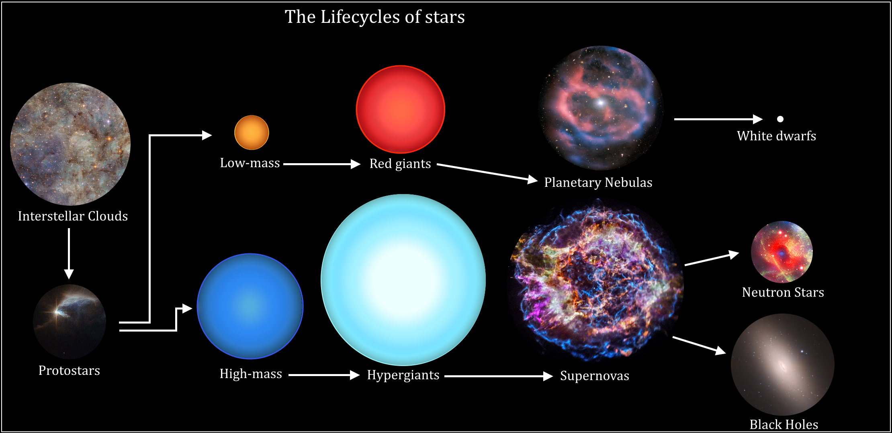

The Life Cycle of Stars
Stars are born, they live, and eventually, they die. Explore the fascinating life cycle of stars, a cosmic journey spanning billions of years and shaping the fabric of the universe itself. The life cycle of a star begins in vast clouds of gas and dust known as nebulae. Under the influence of gravity, these clouds slowly collapse, forming dense cores where temperatures and pressures soar. As the core contracts, temperatures rise, triggering nuclear fusion reactions—the process that powers stars. Hydrogen atoms fuse to form helium, releasing immense amounts of energy in the form of light and heat. Thus, a star is born, heralding the birth of a cosmic beacon that will illuminate the cosmos for millions to billions of years. During the main sequence phase, which constitutes the majority of a star's life, it remains stable, maintaining a delicate balance between the outward pressure of radiation generated by fusion and the inward pull of gravity. Stars like our Sun spend billions of years in this phase, steadily converting hydrogen into helium in their cores. As a star exhausts its hydrogen fuel, its fate diverges depending on its mass. Low to medium-mass stars, like the Sun, expand into red giants as their cores contract and temperatures rise, enabling helium fusion in outer shells. These stars shed their outer layers into space, forming colorful nebulae of gas and dust. Eventually, the core contracts further, becoming a dense white dwarf—a stellar remnant composed of degenerate matter that gradually cools over eons. In contrast, high-mass stars follow a more dramatic path. Once they deplete their hydrogen fuel, they undergo successive stages of fusion, synthesizing heavier elements in their cores, such as carbon, oxygen, and even iron. Each fusion stage releases less energy, leading to a rapid collapse of the core once iron fusion ceases. The core collapse triggers a cataclysmic supernova explosion, where the star briefly outshines entire galaxies, dispersing heavy elements into space. What remains after a supernova depends on the mass of the collapsing core. In some cases, the core collapses into a neutron star—a city-sized object of extreme density—or even a black hole, whose gravitational pull is so intense that not even light can escape. The elements forged in the cores of stars are dispersed into the interstellar medium, enriching future generations of stars and planetary systems. Thus, the life cycle of stars is a cosmic symphony, where birth, evolution, and death shape the universe's tapestry, fostering the emergence of life and the evolution of galaxies across the vast expanse of space and time.